Córtex Estudos · 4º Semestre · Anato Pato II · Aula 12 · AV3 (4/11)
Patologias do Sistema Respiratório (parte 1)
⚠️ Montado a partir dos slides
Montado a partir dos slides — sem gravação da aula; ênfases do professor serão acrescentadas quando houver áudio. O que está aqui segue o conteúdo dos 82 slides; explicações e conexões servem só para entender o que o slide mostra.
A aula parte da estrutura normal (porção condutora × respiratória, células das vias aéreas, pneumócitos, macrófagos, interstício e células inflamatórias) para explicar como o pulmão adoece. Depois vêm a síndrome da angústia respiratória aguda (SARA) com o dano alveolar e a membrana hialina, a COVID-19 (ECA2, TMPRSS2, microtrombos), as pneumonias (lobar, broncopneumonia, intersticial; resolução, sequelas e abscesso), o enfisema, as atelectasias e a tuberculose (resposta inata, fase exsudativa, granuloma, cicatrização e forma miliar), com três casos clínicos.
🔗 Onde esta aula se encaixa
É a primeira parte de respiratório. Ela retoma inflamação aguda e crônica (exsudato, neutrófilos, granuloma), reparo e fibrose e, no caso da COVID, o sistema renina-angiotensina da fisiologia. A tabela de transudato × exsudato aparece duas vezes nos slides: vale saber de cor.
1 · Divisão do sistema e células das vias aéreas
| Porção | Estruturas | Função |
|---|---|---|
| Condutora | Cavidades nasais e seios paranasais, nasofaringe, orofaringe, laringe, traqueia, brônquios e bronquíolos | Leva o ar até a área de troca (não troca gás) |
| Respiratória | Bronquíolos respiratórios, ductos alveolares, sacos alveolares e alvéolos | Troca gasosa |
| Mecanismo de ventilação | Caixa torácica, músculos intercostais, diafragma e o conjuntivo elástico dos pulmões | Move o ar para dentro e para fora |
As células das vias aéreas
| Célula | Onde | O que faz |
|---|---|---|
| Ciliada | Epitélio nasal, traqueia, brônquios e bronquíolos | ~200 cílios por célula; a vibração dos cílios move o aparelho mucociliar |
| Mucossecretora | Cavidade nasal, traqueia e brônquios | Mucinas: barreira mecânica; também imunoglobulinas, antioxidantes e tampões |
| Serosa | Epitélio e glândulas próprias (ex.: cavidade nasal) | Secreta lisozima e lactoferrina |
| Célula clara (de Clara) | Bronquíolos | Metabolização de xenobióticos; têm oxidases e sistemas enzimáticos que podem gerar intermediários carcinogênicos |
| Neuroendócrina | Brônquios | Função sensitiva e secretora; sensível a hipóxia, temperatura e osmolaridade da secreção; modula proliferação, reparo, permeabilidade e tônus. Origem do carcinoma de células pequenas |
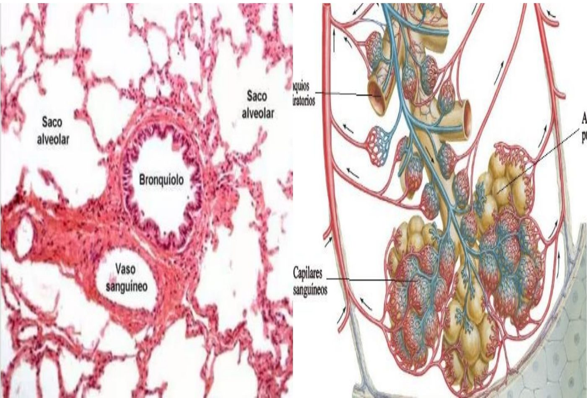
2 · O alvéolo: pneumócitos, macrófagos e endotélio
| Pneumócito I | Pneumócito II | |
|---|---|---|
| Cobertura (slide) | ~95% da superfície alveolar | ~5% |
| Forma | Achatado, de baixa espessura (facilita a difusão) | Cúbico |
| Divisão | Incapaz de se dividir | Diferencia-se em pneumócito I: é a célula de reparo |
| Produto | — | Surfactante: controla a tensão superficial e facilita a opsonização para a fagocitose pelos macrófagos |
- Macrófagos alveolares: de 2 a 3 por alvéolo; são a primeira linha de defesa do tecido pulmonar.
- Células endoteliais: junções estreitas que se abrem por ação de fatores inflamatórios (base do edema inflamatório) e conversão da angiotensina I em II pela ECA.
- Juntos, pneumócito I, membranas basais e endotélio formam a membrana respiratória, por onde o O₂ e o CO₂ se difundem.
⚠️ Divergências: pneumócitos e endotélio
No slide: pneumócitos I "95%" e II "5%". Na literatura: esses números são de área de superfície; em número de células, os pneumócitos II são mais numerosos. No slide: endotélio com "justas fenestras". Na literatura: o capilar alveolar tem endotélio contínuo, não fenestrado; o que se abre na inflamação são as junções entre as células endoteliais.
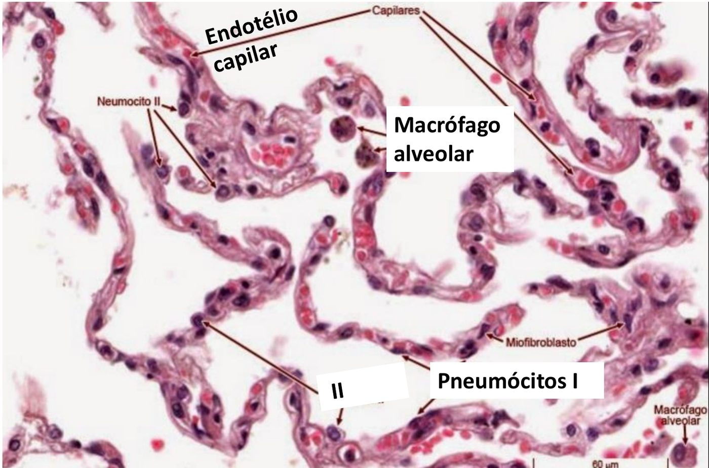
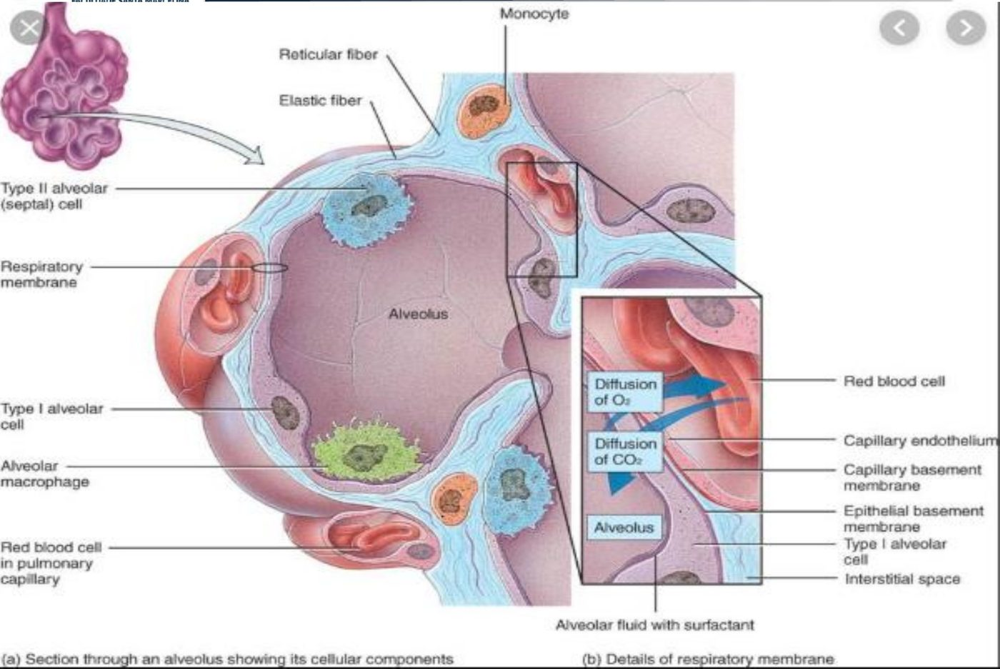
3 · Interstício e células inflamatórias
- O interstício alveolar sustenta a estrutura do alvéolo. Tem fibras elásticas, colágenas e proteoglicanas, fibroblastos e células inflamatórias.
- Na lâmina, junto ao bronquíolo respiratório: fibras musculares lisas, feixes de colágeno, fibroblastos, mastócitos e células mononucleares.
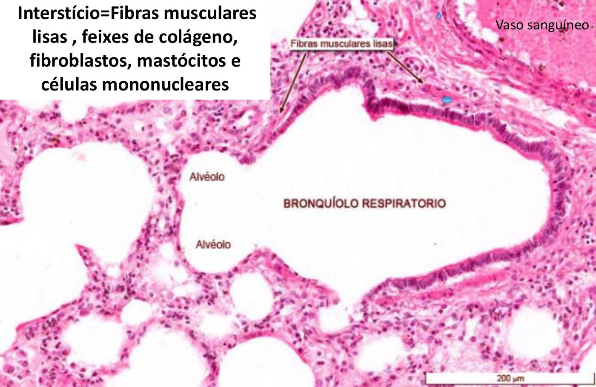
| Célula | O que libera / faz | Por que importa no pulmão |
|---|---|---|
| Mastócito | Histamina (↑ permeabilidade vascular), quimiotáticos para eosinófilos e neutrófilos, proteases que ativam mediadores, leucotrienos (potente constritor da musculatura lisa) e heparina | Edema e broncoconstrição |
| Monócito / macrófago | Fagocita, apresenta antígenos e libera citocinas | Liga a resposta inata à adaptativa |
| Neutrófilo | Fagocita, faz quimiotaxia, libera elastase e colagenases. Grânulos específicos: lisozima (perfura a parede bacteriana), lactoferrina (sequestra Fe²⁺), síntese de H₂O₂ e O₂⁻ | Mata bactérias, mas também destrói a matriz (SARA, enfisema) |
4 · Comunicações: poros de Kohn, canais de Lambert e de Martin
- Poros de Kohn: comunicação interalveolar (entre alvéolos vizinhos).
- Canais de Lambert: entre ductos alveolares e alvéolos (como está no slide).
- Canais de Martin: comunicação entre bronquíolos.
- Essas vias permitem a ventilação colateral: o ar chega a alvéolos situados depois de um tampão mucoso. A mesma passagem deixa exsudato e microrganismos avançarem de um alvéolo para outro.
⚠️ Divergência: canais de Lambert
No slide: canais de Lambert "entre ductos alveolares e alvéolos". Na literatura: são comunicações bronquíolo-alveolares, entre os bronquíolos (terminais e respiratórios) e os alvéolos vizinhos. Kohn (alvéolo-alvéolo) e Martin (bronquíolo-bronquíolo) coincidem.
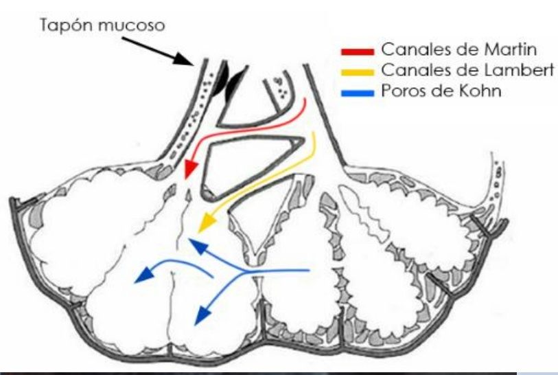
5 · SARA: conceito, mecanismo e causas
- A síndrome da angústia respiratória aguda (SARA) é o denominador comum de várias doenças que podem provocar uma inflamação exagerada nos pulmões.
A sequência do slide
- 1Dano capilar e do epitélio alveolar
- 2Aumento da permeabilidade capilar (transudação/exsudação) → edema e secreção inflamatória/infecciosa no alvéolo
- 3Alteração da difusão passiva dos gases e da produção de surfactante
- 4↓ PaO₂ e acidose
| Causa direta (agressão chega pelo alvéolo) | Causa indireta (agressão chega pelo sangue) |
|---|---|
| Aspiração de conteúdo gástrico | Síndrome séptica |
| Infecção viral | Circulação extracorpórea |
| Pneumonias | Pancreatite |
| Quase afogamento | Embolia gordurosa |
| Inalação de gases tóxicos | Intoxicação por drogas |
| Contusão pulmonar |
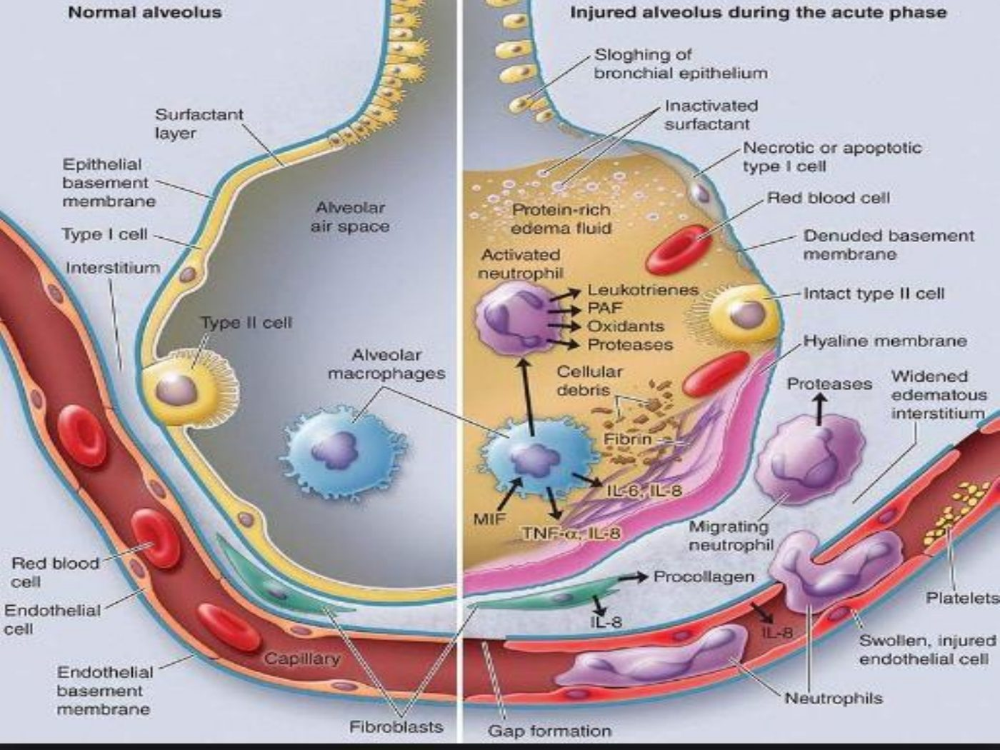
6 · Fluxo sanguíneo na inflamação e transudato × exsudato
- Vasodilatação por ação da histamina → aumento do fluxo de sangue → hiperemia.
- Exsudação → o fluxo fica lento, cai o oxigênio e acumula H⁺.
- O endotélio é lesado por hipóxia, por enzimas leucocitárias e por ação direta do vírus (na COVID). Com o fluxo mais lento, há predisposição a trombos.
| Transudato (edemas) | Exsudato (infecções, inflamações) | |
|---|---|---|
| Densidade | < 1016 | > 1016 |
| Proteína | < 3 g/100 mL | > 3 g/100 mL |
| Glicose | Normal | < 30 mg/100 mL |
| Leucócitos | < 1.000/mm³ | > 1.000/mm³ |
| Causas | Insuficiência cardíaca, cirrose, hipoalbuminemia, síndrome nefrótica | Infecção, tumor, trauma, tuberculose |
- A lógica: o transudato é líquido que sai por pressão (hidrostática alta ou oncótica baixa) com o vaso íntegro, por isso é pobre em proteína e células. O exsudato sai porque o vaso ficou permeável pela inflamação: carrega proteína, fibrina e leucócitos, e as células consomem a glicose.
⚠️ Divergência: glicose e critérios
No slide: glicose do exsudato < 30 mg/100 mL. Na literatura (líquido pleural), glicose abaixo de 60 mg/dL já sugere exsudato (empiema, tuberculose, artrite reumatoide), e a separação mais usada é pelos critérios de Light (proteína e LDH do líquido em relação ao soro). Para a prova, use os valores do slide.
Neutrofilia: três lugares
- Marginalização vascular de leucócitos (dentro dos capilares) → intersticial (nos septos) → alveolar (dentro do espaço aéreo, já formando exsudato).
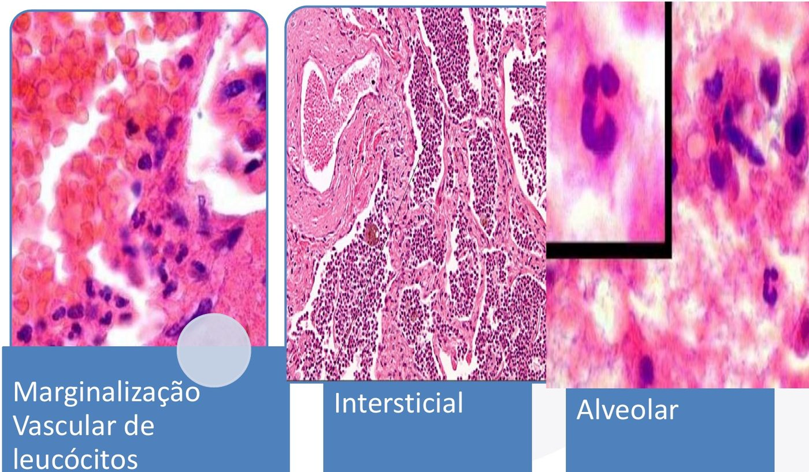
7 · Lesão aguda: membrana hialina e dano alveolar
- Membrana hialina = fluido de edema (exsudativo) rico em fibrina + remanescentes necróticos. Ela se deposita revestindo o interior dos alvéolos, como uma faixa eosinofílica (rosa) colada à parede.
- Junto vêm neutrófilos no exsudato e pneumócitos II proliferando para cobrir a membrana basal desnuda.
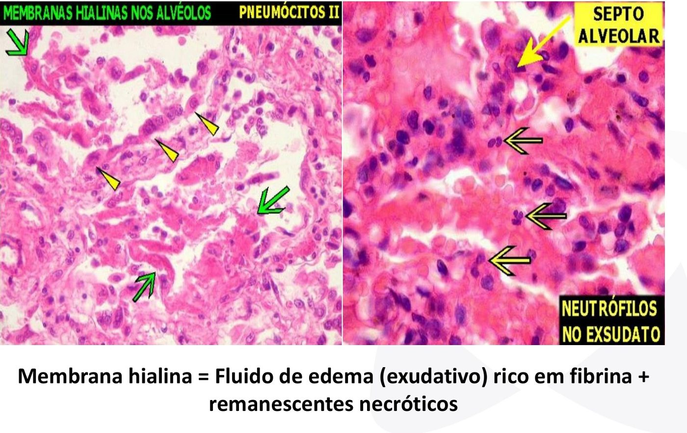
A evolução do dano alveolar difuso
| Quadro | O que aparece | Fase |
|---|---|---|
| A | Exsudato proteico e fibrina evidentes | Exsudativa (precoce) |
| B | Expansão difusa das paredes e septos por proliferação fibroblástica e hiperplasia de pneumócitos II | Dano alveolar difuso precoce |
| C | Tampões de fibroblastos ("bolas de fibroblastos") no interstício, infiltrando o espaço aéreo | Organização |
| D | Macrófagos abundantes no espaço aéreo e hiperplasia de pneumócitos II | Organização |
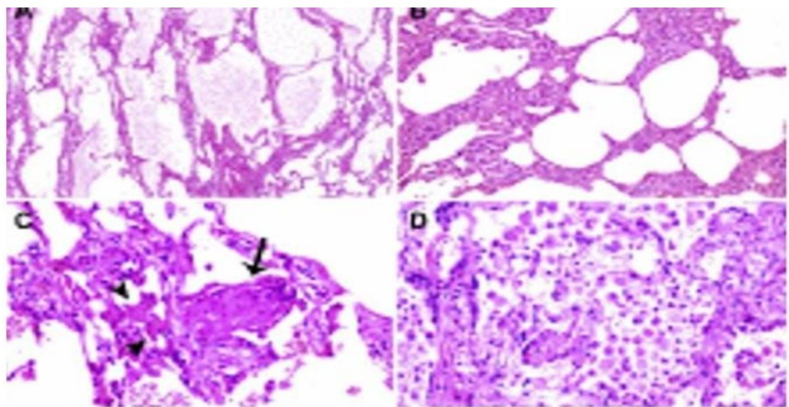
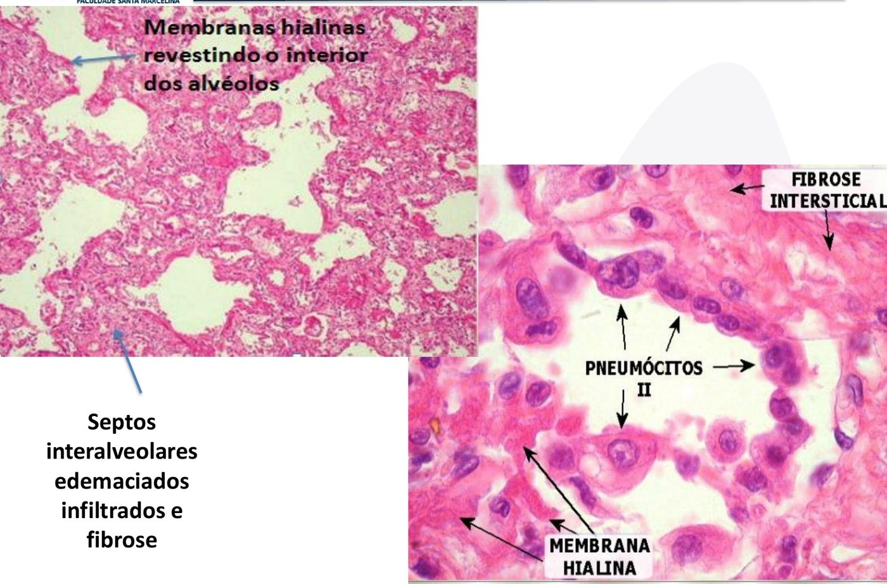
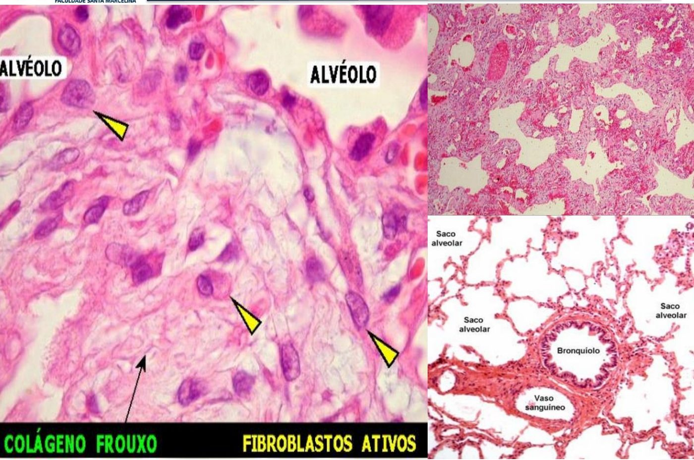
8 · COVID-19: o vírus e a entrada na célula
- SARS-CoV-2: vírus zoonótico, de RNA, da ordem Nidovirales, família Coronaviridae. Novo coronavírus descrito no fim de 2019, após casos na China; causa a COVID-19.
- Estrutura: glicoproteína spike (S, espícula), proteína de matriz (M), proteína do envelope (E) e proteína do nucleocapsídeo (N).
- Diagnóstico: PCR e sorológico (anticorpos IgM e IgG).
Entrada e replicação
- 1A glicoproteína S se liga ao receptor ECA2 (enzima conversora de angiotensina 2)
- 2A serina protease TMPRSS2 cliva a proteína S e possibilita a entrada do vírus
- 3A partícula é internalizada (endocitose); há fusão de membranas e liberação do RNA viral
- 4Replicação e tradução do RNA → síntese e liberação de novas partículas
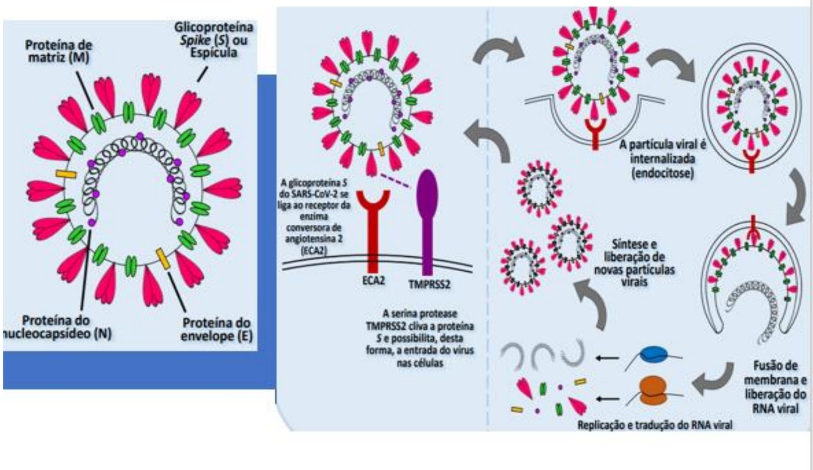
9 · ECA × ECA2 e o sistema renina-angiotensina
- No SRAA, o angiotensinogênio (fígado) vira angiotensina I pela renina (rim). Na superfície do endotélio pulmonar (e renal), a ECA converte angiotensina I em angiotensina II, que aumenta a atividade simpática, a reabsorção de Na⁺, a secreção de aldosterona e de ADH e faz vasoconstrição arteriolar: a pressão sobe.
| ECA | ECA2 | |
|---|---|---|
| Tipo | Proteína transmembrana | Proteína transmembrana |
| O que remove da angiotensina I | His-Leu (2 aminoácidos) | Leu (1 aminoácido) |
| Produto | Angiotensina II | Angiotensina (1-9), que a ECA hidrolisa em angiotensina (1-7) |
| Efeito | Potente vasoconstritor | Ang (1-7): potente vasodilatador e modulador da função cardíaca |
- Onde a ECA2 é expressa: pulmão (pneumócitos II); coração (muito liberada quando o SRA está ativado em excesso: hipertensão, insuficiência cardíaca congestiva, aterosclerose); epitélio intestinal; endotélio vascular; rins.
- Essa distribuição explica a falência de múltiplos órgãos na infecção pelo SARS-CoV-2: o vírus usa a ECA2 como porta de entrada em todos esses tecidos.
⚠️ Divergência: a via principal da ECA2
No slide: a ECA2 converte angiotensina I em (1-9), depois a ECA forma (1-7). Na literatura: essa via existe, mas a ação principal da ECA2 é converter a angiotensina II diretamente em angiotensina (1-7) (remove a Phe terminal). O efeito final é o mesmo: contrabalançar a angiotensina II.
10 · Pulmão na COVID-19: o que se vê
- Tomografia: vidro fosco e consolidação, bilaterais, predominando na periferia.
- Macroscopia e histologia (óbito por COVID-19): pneumonia intersticial e perivascular predominantemente linfocítica, com endotelialite multifocal.
- Microtrombos fibrinosos nos capilares dos septos interalveolares, paredes alveolares discretamente expandidas, eritrócitos extravasados e rede frouxa de fibrina no espaço alveolar.
- Isso fecha com o tópico 6: a ação direta do vírus no endotélio + fluxo lento → trombos.
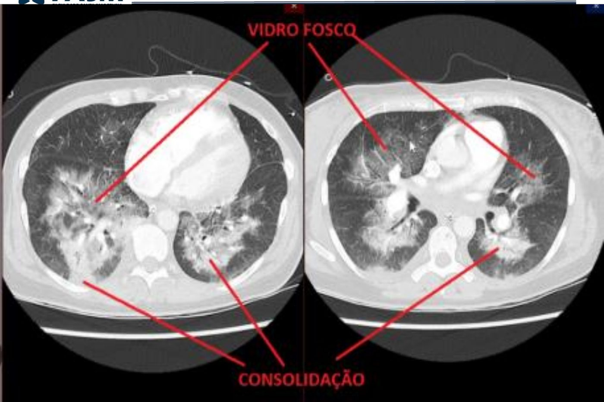
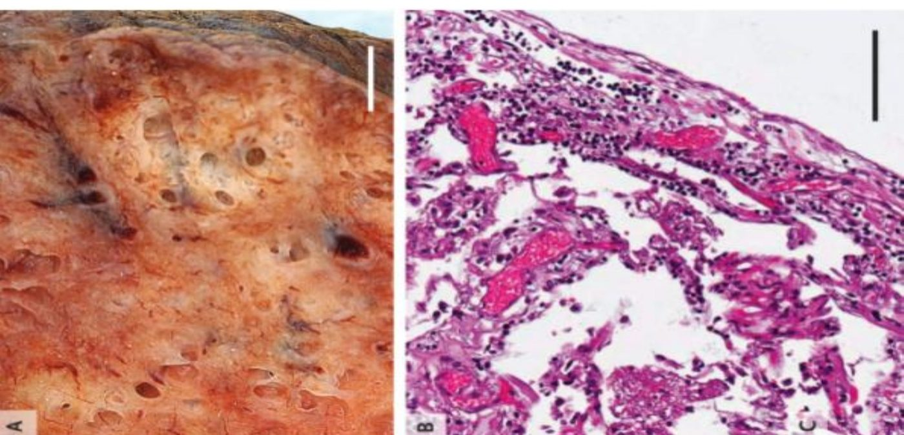
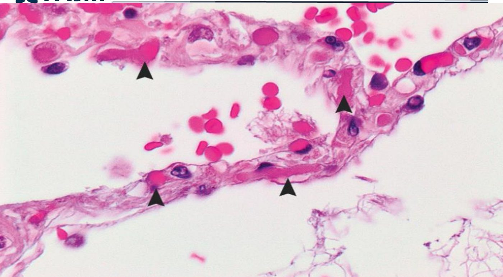
11 · Pneumonias: conceito, agentes e fisiopatogenia
- Pneumonia = quadro infeccioso do parênquima: bronquíolos respiratórios + alvéolos.
- O exsudato inflamatório (densidade > 1016, proteína > 3 g/100 mL, glicose < 30 mg/100 mL, leucócitos > 1.000/mm³) ocupa o espaço da troca gasosa: baixa PO₂, alta de CO₂, acidose e queda da síntese de ATP.
- Agentes causais: bactéria (destacada no slide), vírus, fungos, toxinas e parasitas.
| Microrganismo | Mecanismo de invasão |
|---|---|
| S. pneumoniae | Cápsula (adesão e antifagocitose), hialuronidase, pneumolisina, protease de IgA |
| Chlamydia pneumoniae | Fatores ciliostáticos (param os cílios) |
| Mycoplasma pneumoniae | Fatores destrutivos de cílios |
| Mycobacterium e Legionella | Resistência à atividade microbicida dos macrófagos |
| Vírus influenza | Diminuição na produção de muco |
⚠️ Divergência: influenza
No slide: o influenza age pela "diminuição na produção de muco". Na literatura, o que se destaca é a lesão do epitélio ciliado e da depuração mucociliar, que abre caminho para a pneumonia bacteriana secundária.
Fisiopatogenia
- 1Proliferação de microrganismos no espaço pulmonar (lobo, bronquíolos, alvéolo ou interstício)
- 2Capacidade fagocítica dos macrófagos alveolares excedida
- 3Resposta inflamatória
- 4Pneumonia
12 · Padrões: lobar, broncopneumonia e intersticial
| Padrão | Distribuição | Onde está o processo | Resultado |
|---|---|---|---|
| Pneumonia lobar | Imagem homogênea do lobo acometido | Vias aéreas maiores pérvias | Exsudato em alvéolos e sacos alveolares |
| Broncopneumonia | Focos múltiplos | Nos alvéolos e bronquíolos | Exsudato, edema e destruição de paredes |
| Pneumonia intersticial | Difusa, às vezes bilateral | Alargamento dos septos alveolares (edema e infiltrado leucocitário) | Pouco líquido intra-alveolar |
- Na lobar, o lobo inteiro fica opaco por igual porque o exsudato enche os alvéolos, enquanto os brônquios continuam com ar (pérvios). Na broncopneumonia, a infecção parte dos bronquíolos e forma focos espalhados. Na intersticial, o processo fica no septo, e o alvéolo quase não enche.
- Nas três, o que se mede é a troca gasosa: PO₂, PCO₂ e pH.
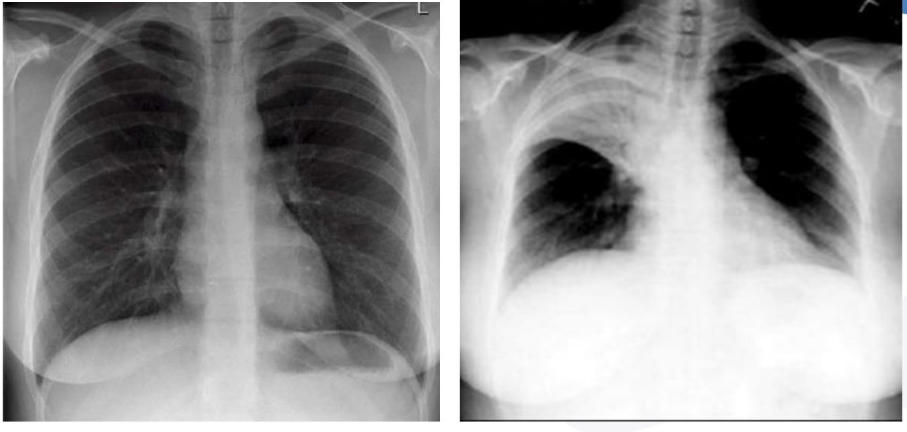
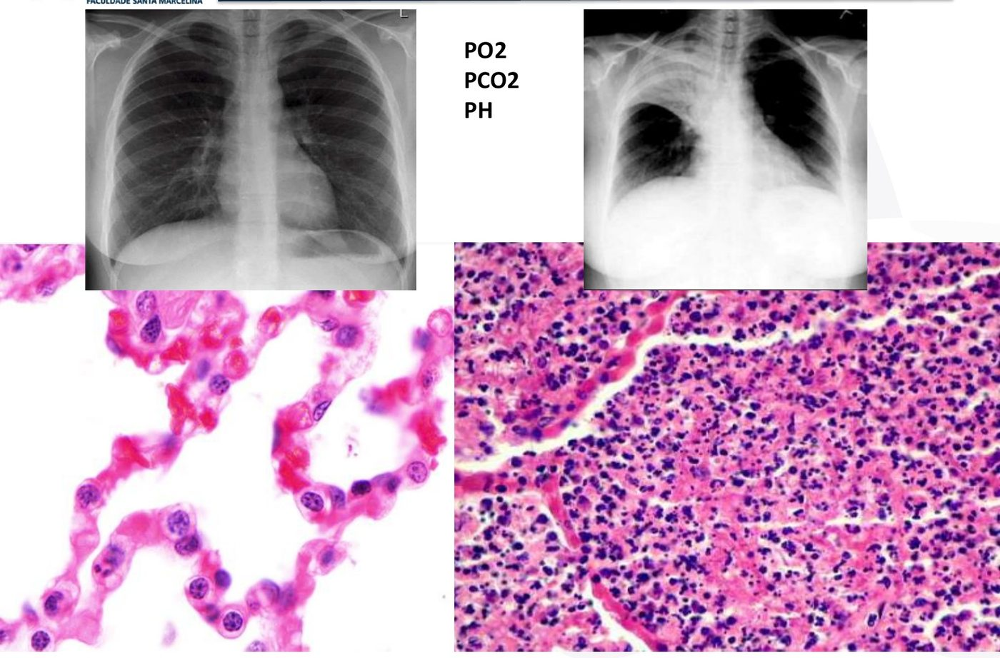
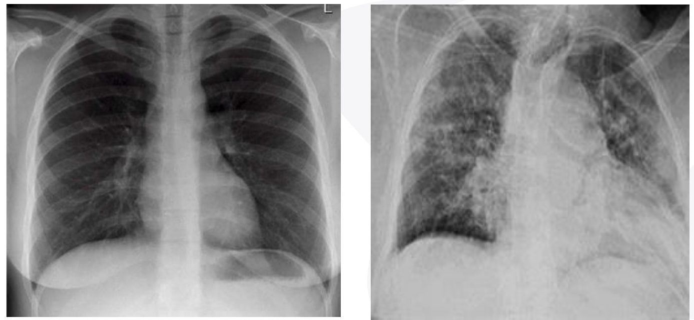
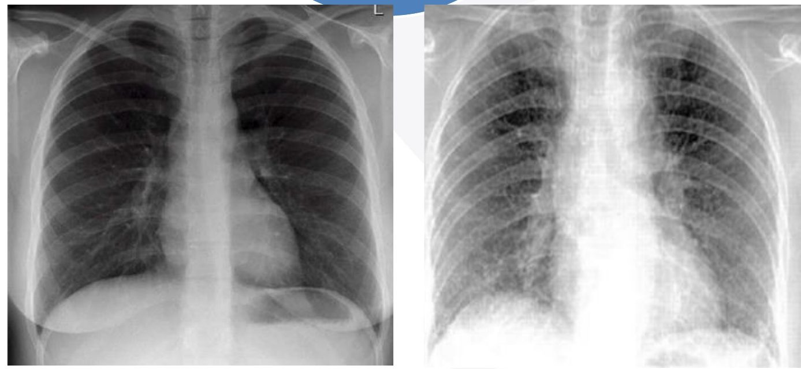
13 · Resolução, sequelas e abscesso
| Resolução | Sequelas |
|---|---|
| A fibrina intra-alveolar é digerida por enzimas proteolíticas das células inflamatórias; os detritos são reabsorvidos ou eliminados pelo escarro. | Dependem da patogenicidade do agente + resposta inflamatória do paciente. Resultam de dano estrutural + cicatrização fibrótica + severidade da hipóxia + lesões trombóticas. |
Abscesso pulmonar
- Quando o agente causal permanece, forma-se o abscesso: coleção de pus, destruição tecidual e formação de cavidade, com restos celulares, microrganismos e células inflamatórias, cercados por fibroblastos.
- O desfecho é a cicatriz.
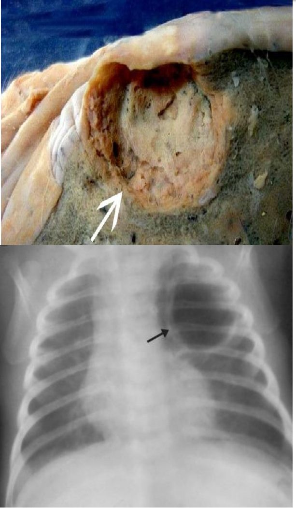
14 · Casos clínicos de pneumonia
🩺 Caso 1 (slide): influenza H1N1
Homem de 27 anos, hígido, com febre, tosse seca, mialgia e rinorreia há 3 dias. Recebe sintomáticos e repouso. Sem melhora em 5 dias: radiografia com opacidade no lobo inferior direito, PCR 154,1, leucócitos 5.700/mm³ (neutrófilos 4.845, linfócitos 483). Inicia levofloxacino: piora, com dispneia. Três dias depois: FR 40 irpm, musculatura acessória, dor torácica ventilatório-dependente, PA 140/100, SatO₂ 65% em ar ambiente e 85% com O₂ a 15 L/min, radiografia com infiltrados em todos os campos e coração normal. Lactato 2,3 mmol/L, creatinina 2,8 mg/dL, ureia 72 mg/dL, PCR 217,4, LDH 3.177 U/L, CK 6.324 U/L. Secreção de nasofaringe: influenza A (H1N1) positivo.
- O primeiro atendimento já mostrava síndrome gripal (febre, tosse seca, mialgia, rinorreia) com opacidade pulmonar e linfopenia (483/mm³), sem leucocitose: perfil de pneumonia viral.
- O que oportunizou a piora: o quadro foi tratado como banal (só sintomáticos) e depois como bacteriano (levofloxacino), sem investigar o vírus logo no início. O antibiótico não age sobre o influenza.
- No segundo atendimento: hipoxemia que quase não responde ao O₂ + infiltrado difuso bilateral com coração normal = SARA (causa direta: infecção viral). Creatinina e ureia altas = lesão renal; LDH e CK muito altas = dano tecidual e muscular; lactato alto = hipoperfusão. É um quadro de disfunção de múltiplos órgãos.
- Após a cura, podem ficar as sequelas do tópico 13: dano estrutural, fibrose, lesões trombóticas e perda da capacidade de expansão.
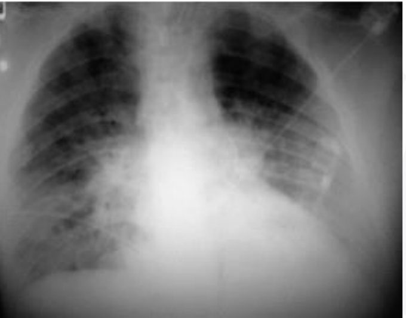
🩺 Caso 2 (slide): pneumonia bacteriana
Homem de 45 anos, tosse produtiva com expectoração amarelada há 5 dias, febre de 39,5 °C; há 2 dias, dor torácica ventilatório-dependente à esquerda e dispneia. Taquipneico, FC 100, FR 33, PA 150/100, SatO₂ 82%. Hemograma: leucócitos 29.800/mm³, segmentados 68%, bastonetes 26% (ref. 0–5%), linfócitos 3%, granulações tóxicas +.
- Diagnóstico provável: pneumonia bacteriana com consolidação: tosse produtiva purulenta, febre alta, dor pleurítica, hipoxemia, leucocitose com desvio à esquerda (bastonetes) e granulações tóxicas.
- O líquido no alvéolo é exsudato: densidade > 1016, proteína > 3 g/100 mL, glicose < 30 mg/100 mL, leucócitos > 1.000/mm³, rico em neutrófilos e fibrina.
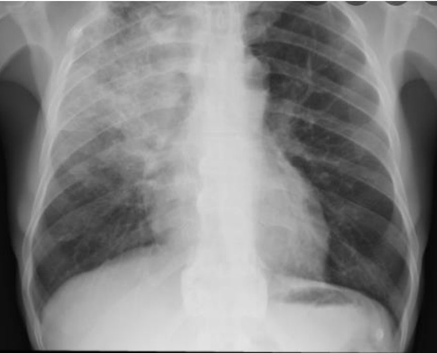
15 · Enfisema: definição e morfologia
- É a forma enfisematosa da doença pulmonar obstrutiva: dilatação permanente + destruição sem fibrose significativa das vias aéreas distais aos bronquíolos terminais (a partir dos bronquíolos respiratórios).
- Definição do slide: "dilatação anormal e permanente dos espaços aéreos distais do bronquíolo terminal".
- O slide cita uma revisão (2014) sobre a combinação de fibrose pulmonar e enfisema, "uma doença cada vez mais reconhecida": os dois podem coexistir.
| Enfisema centrolobular | Enfisema panlobular | |
|---|---|---|
| Parte do ácino | Porção central (bronquíolos respiratórios dilatados) | Todo o ácino, do bronquíolo respiratório aos sacos alveolares |
| Ductos e sacos alveolares | Relativamente poupados | Dilatados também |
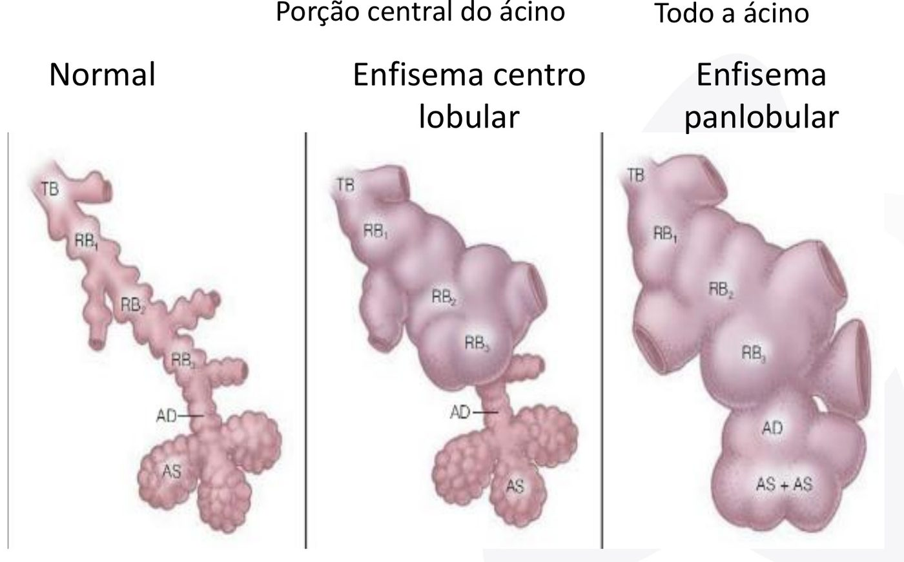
🔗 Conexão (literatura, não está no slide)
O centrolobular é o padrão típico do tabagismo; o panlobular, da deficiência de α1-antitripsina, a principal antiprotease do pulmão. Isso ajuda a entender a "redução da atividade antiproteinase" do próximo tópico.
16 · Enfisema: etiopatogenia e limitação ao fluxo
- Neutrófilos e macrófagos liberam enzimas proteolíticas: os neutrófilos, serinoelastases; os macrófagos alveolares, metaloproteinases.
O ciclo da destruição (slide)
- 1Irritabilidade ativa: macrófagos liberam fatores quimiotáticos para neutrófilos; a nicotina é quimiotática para neutrófilos
- 2Alteração da microvasculatura, da permeabilidade endotelial e aderência de neutrófilos
- 3Aumenta a atividade das elastases de neutrófilos e macrófagos
- 4Agentes oxidantes (dos neutrófilos, da fumaça e ambientais)
- 5Agressão da matriz extracelular + redução da atividade antiproteinase = destruição do parênquima
Por que o fluxo de ar fica limitado
| Estímulo → resposta inflamatória → dois ramos | |
|---|---|
| Lesão de pequenas vias, destruição do parênquima, remodelamento, perda da superfície | Perda do acoplamento alveolar, redução da elasticidade, redução da vascularização |
| → Deformidade, estreitamento das vias, obstrução ao fluxo | |
- O acoplamento alveolar são os septos presos à parede das pequenas vias, que as puxam e mantêm abertas. Destruídos os septos, as pequenas vias colabam na expiração e o ar fica retido: o pulmão perde a retração elástica e hiperinsufla.
- Histologia: aumento progressivo dos espaços, com alvéolos fundidos e aumento do espaço aéreo; hiperinsuflação, distensão, ruptura alveolar e fibrose.
- Macroscopia e TC: bolhas (grandes espaços aéreos de paredes finas) e áreas hipodensas sem parede.
⚠️ Divergência interna: enfisema e fibrose
Um slide define enfisema "sem fibrose significativa"; outro lista "hiperinsuflação, distensão, ruptura alveolar e fibrose". Na literatura, a definição clássica é sem fibrose significativa; quando há fibrose importante, fala-se na combinação fibrose + enfisema, citada no próprio slide.
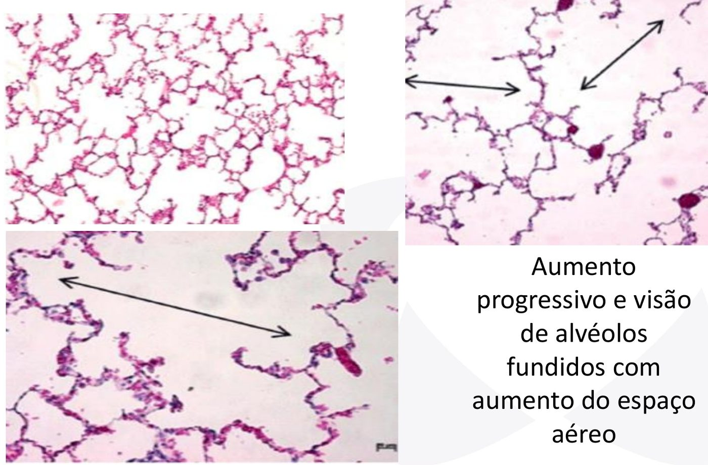
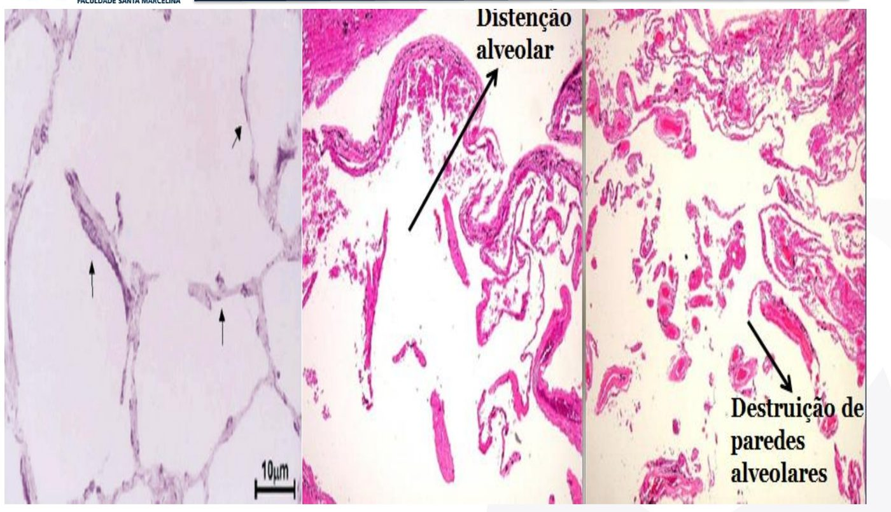
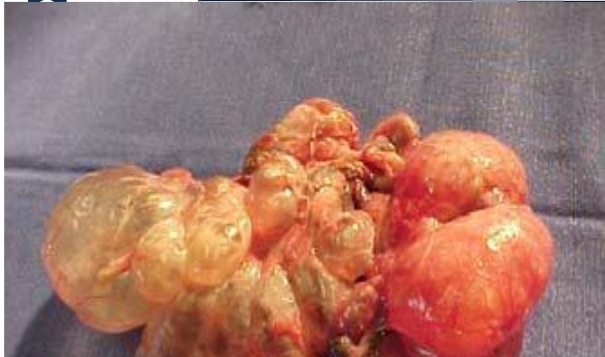
17 · Atelectasias
- Atelectasia (colapso) = perda de volume por expansão inadequada dos espaços aéreos.
| Tipo | Mecanismo | Exemplos do slide |
|---|---|---|
| Reabsorção (obstrutiva) | Obstrução impede a entrada de ar nas vias distais; o ar que ficou é reabsorvido | Muco/secreção, tumor, corpo estranho |
| Compressão | Acúmulo de líquido ou ar extrapulmonar comprime o pulmão | Sangue, líquido pleural (derrame), ar (pneumotórax), compressão mecânica |
| Contração | Alteração tecidual cicatricial, local ou generalizada, impede a expansão | Fibrose pulmonar ou pleural (ex.: pleurite tuberculosa) |
- Derrame pleural grande: opacidade dos 2/3 inferiores do hemitórax, com a curva (parábola) de Damoiseau, rechaçando a traqueia e o coração para o lado oposto: o líquido empurra o pulmão.
- Pneumotórax: ar na pleura; área hipertransparente, sem trama vascular, com o pulmão colapsado afastado da parede.
- Pela lógica do mecanismo, a compressão empurra o mediastino para longe, enquanto o pulmão que perde volume por reabsorção puxa as estruturas para o próprio lado.
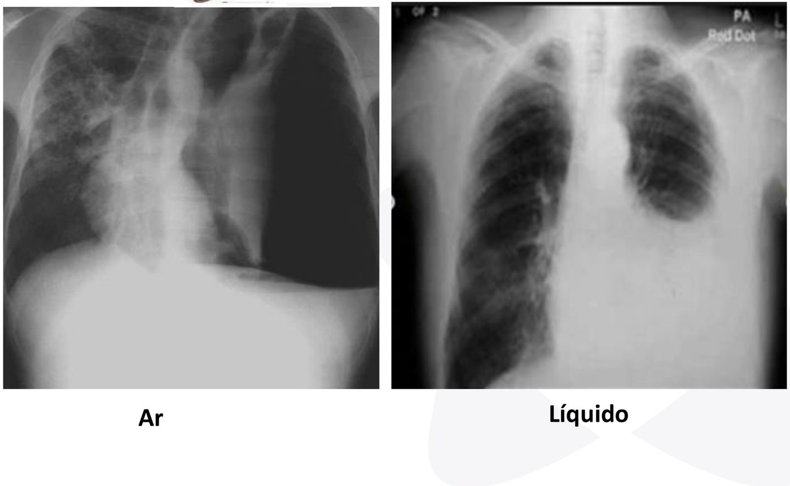
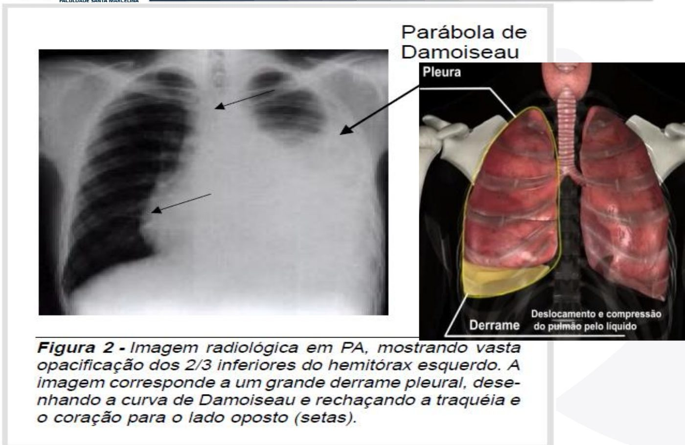
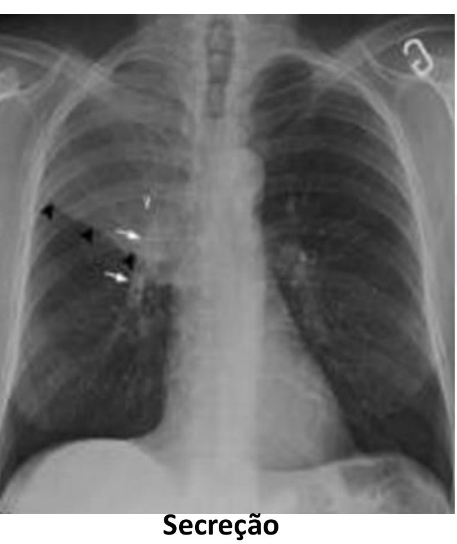
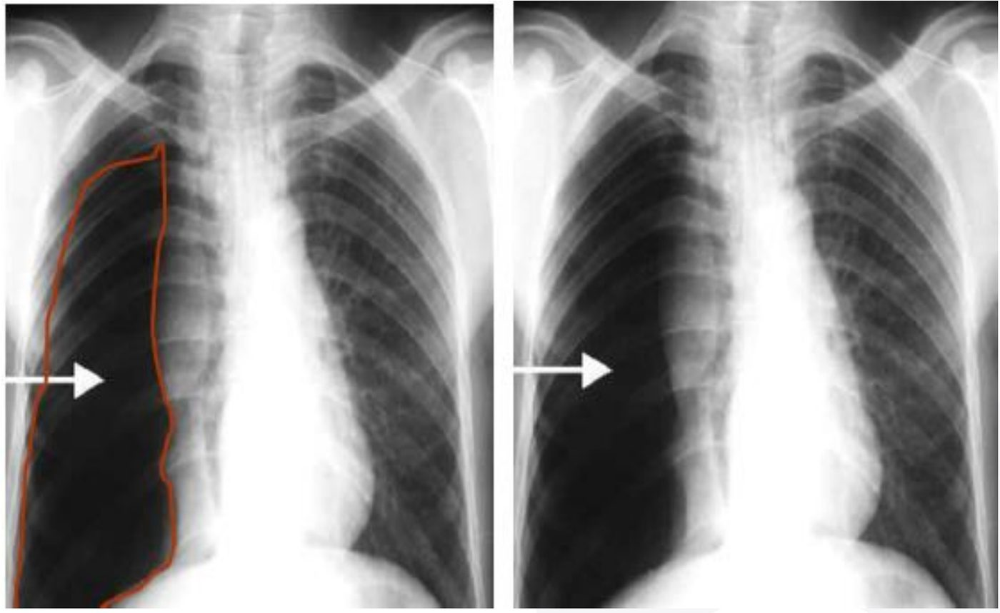
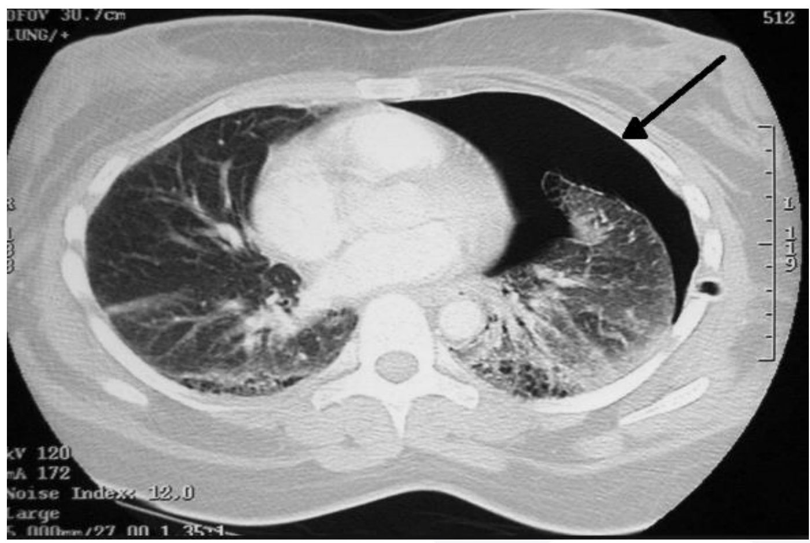
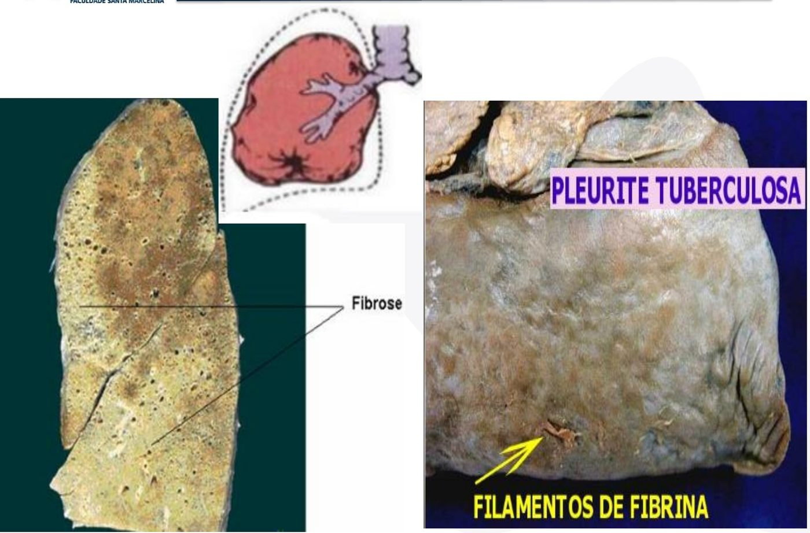
18 · Tuberculose: agente e fisiopatogenia
| Agente | Mycobacterium tuberculosis, o bacilo de Koch (BK) |
|---|---|
| Transmissão | Aerossóis |
| Imunidade | Doença ligada à incapacidade imune: AIDS, desnutrição, alcoolismo, drogas imunossupressoras |
- Duas respostas: a imune inata, com reação inflamatória inespecífica, e a adaptativa, com reação inflamatória granulomatosa.
- Componentes antigênicos da parede do BK: lipídeos; carboidratos (responsáveis pela reação neutrofílica); tuberculoproteína (confere a sensibilidade ao bacilo; é a base do PPD, purified protein derivative).
Resposta imune inata
- Os macrófagos fagocitam o bacilo e o internalizam no fagossoma. O fagossoma se funde com o lisossoma (= fagolisossoma) e os grânulos tóxicos do macrófago são liberados.
- Se a resposta inicial for efetiva, o bacilo é eliminado pelos macrófagos alveolares.
- Mas o BK sintetiza a "proteína repetitiva exportada", que inibe a fusão do fagossoma com o lisossoma.
Reação exsudativa
- O M. tuberculosis desenvolve mecanismos de escape: rompe a parede do fagossoma e cresce livremente dentro do macrófago, além de inibir a fusão lisossomal.
- Há crescimento bacilar e uma resposta inespecífica, com acúmulo local de polimorfonucleares que fagocitam o bacilo. Neutrófilos e macrófagos são atraídos pelos carboidratos da parede.
- São cerca de 3 semanas de inespecificidade, até a indução da resposta adaptativa. Pesam a carga inalada e as depressões do sistema imune.
Danos da fase exsudativa
- 1Liberação de oxidases e elastases
- 2Alveolite aguda exsudativa
- 3Necrose de alvéolos + fibrina + neutrófilos degenerados + bacilos viáveis + macrófagos
19 · Granuloma, células gigantes e cicatrização
- Na resposta adaptativa, macrófagos viram células epitelioides, que se fundem em sincícios → células gigantes multinucleadas → granuloma.
- Granuloma = uma ou mais células gigantes centrais rodeadas por células epitelioides, linfócitos, macrófagos e poucos plasmócitos. No centro pode haver necrose caseosa.
- Célula gigante de Langhans: núcleos em ferradura na periferia da célula.
- BK no escarro: o escarro é espalhado em lâmina e corado; os bacilos aparecem vermelhos sobre fundo azul (aspecto da coloração para bacilos álcool-ácido-resistentes, o Ziehl-Neelsen).
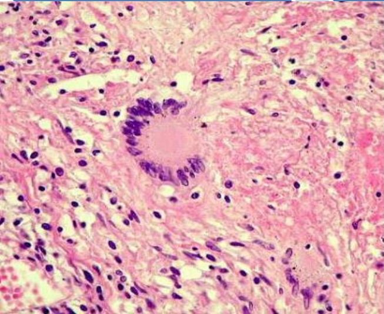
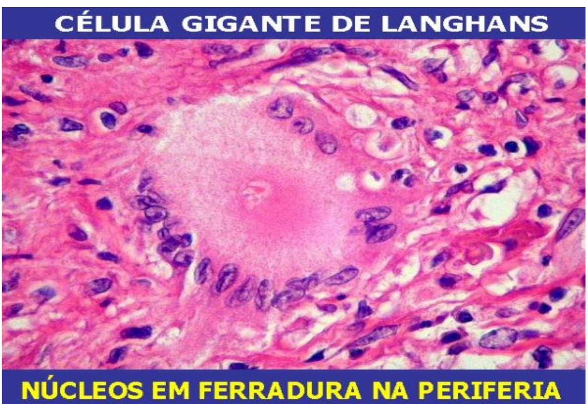
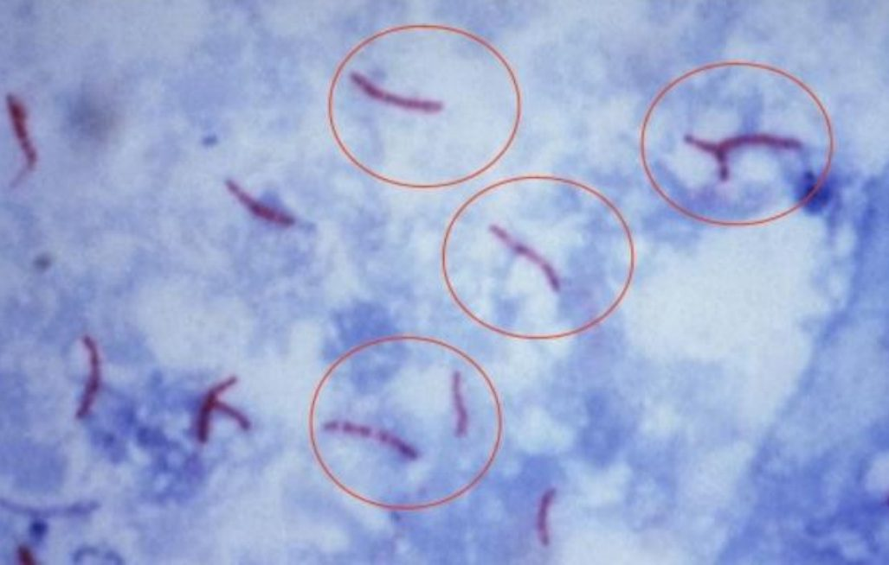
Reação de cicatrização
- Colagenização do granuloma → síntese de fator de crescimento para fibroblastos → cicatrização hialina e calcificação.
- Com o crescimento bacilar controlado: regressão das células epitelioides e gigantes → formação de cápsula fibrosa → necrose caseosa central → o halo linfocítico tende a desaparecer.
- Quando a cicatrização é extensa: fibrose pulmonar difusa e extensa → redução da capacidade de expansão → perda da capacidade funcional do pulmão (e atelectasia por contração, tópico 17).
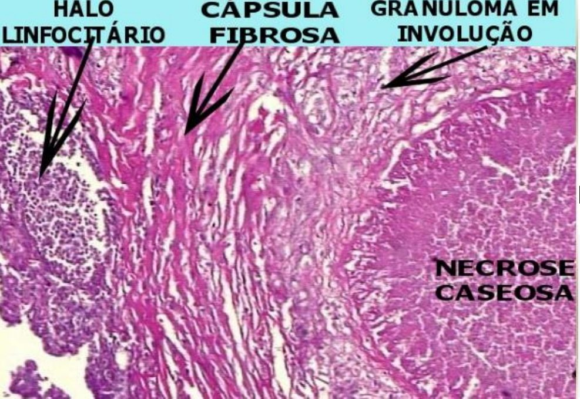
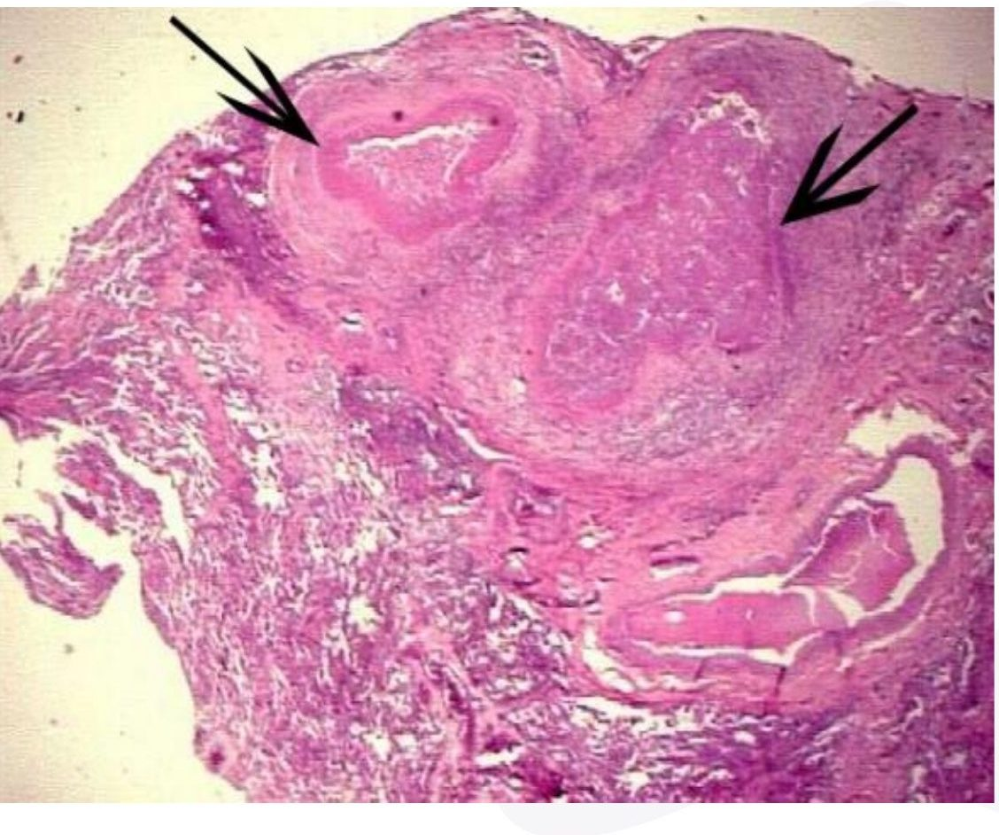
20 · Caso de tuberculose e TB miliar
🩺 Caso 3 (slide): massa pulmonar
Homem de 73 anos, ex-fumante (10 anos-maço), há 6 meses com crises diárias de tosse seca, dispneia e sibilos; perdeu 3 kg. Sem febre nem hemoptise. Criou animais e conviveu com fogão a lenha até os 25 anos. SatO₂ 90%. Espirometria: distúrbio obstrutivo leve sem resposta ao broncodilatador. Mantoux de 15 mm. TC: massa hipodensa de 5,0 × 3,5 cm no lobo superior direito, com o maior eixo para o hilo. Broncoscopia: obstrução extrínseca do brônquio do lobo superior direito, mucosa infiltrada; biópsias inconclusivas. Cirurgia: massa cavitada com conteúdo espesso e linfonodomegalia mediastinal em todas as cadeias. Anatomopatológico: infiltrado inflamatório crônico granulomatoso e exsudativo, extensas áreas de necrose caseosa, fibrose e reação gigantocelular, sem malignidade.
- Diagnóstico: tuberculose pulmonar em forma de massa (simulando tumor), com necrose caseosa, granulomas com células gigantes e comprometimento linfonodal.
- Mantoux positivo: a tuberculoproteína (PPD) injetada na pele provoca reação no local porque o organismo já foi sensibilizado pelo bacilo (é a "sensibilidade" que a tuberculoproteína confere). Mostra infecção prévia, não prova doença ativa sozinho.
- Obstrução sem resposta ao broncodilatador: não é broncoespasmo. É obstrução fixa: compressão extrínseca do brônquio pela massa e pelos linfonodos, mais fibrose e distorção das vias aéreas pela cicatrização dos granulomas.
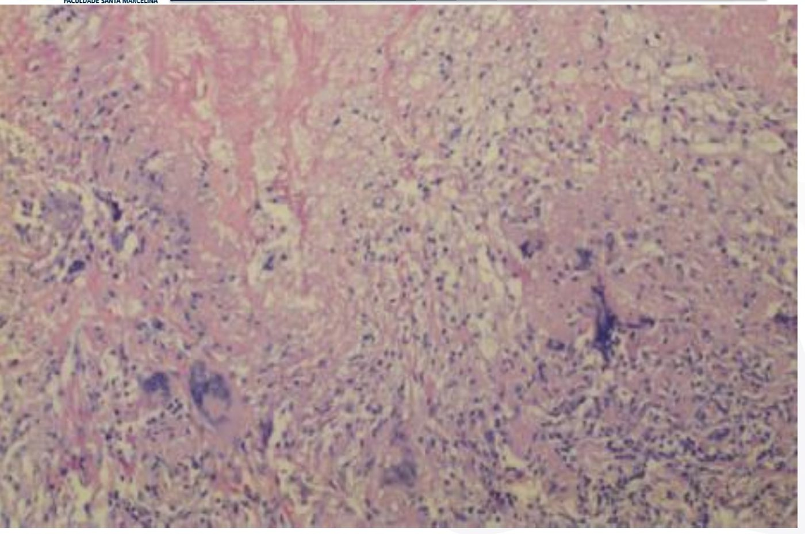
Tuberculose miliar
- Disseminação do bacilo (pulmonar e/ou tecidual) → formação de múltiplos nódulos inflamatórios pequenos, como grãos de painço.
- Na imagem: infiltrado micronodular intersticial, de difuso (nódulos esparsos) a denso (nódulos confluentes).
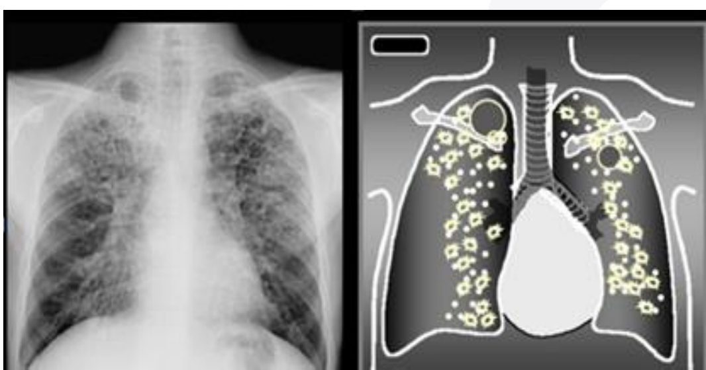
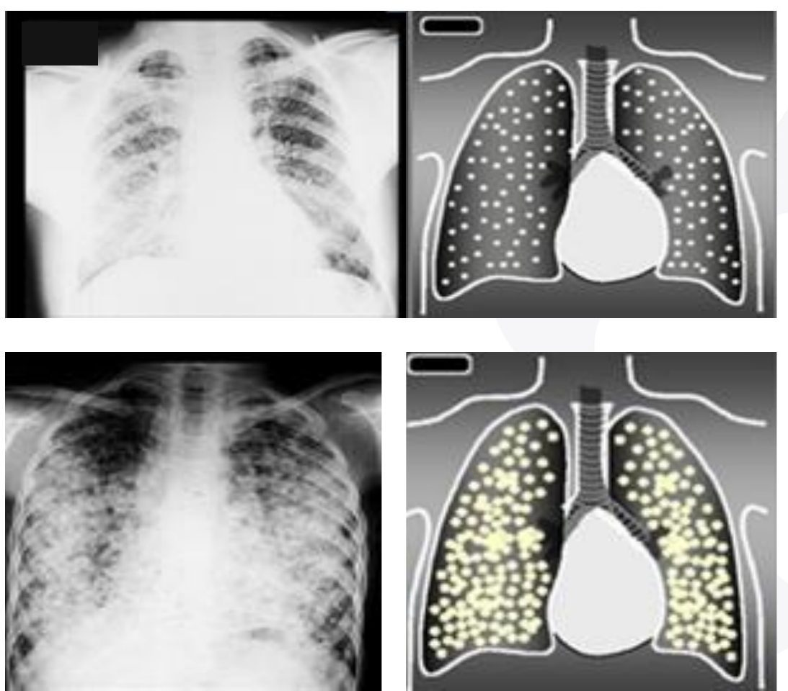
✅ Resumo rápido da aula
- Estrutura: condutora (nariz → bronquíolos) × respiratória (bronquíolo respiratório → alvéolo) · ciliadas (~200 cílios), mucossecretoras, serosas (lisozima, lactoferrina), claras (xenobióticos, intermediários carcinogênicos), neuroendócrinas → carcinoma de pequenas células.
- Alvéolo: pneumócito I (95% da superfície, não se divide) · pneumócito II (surfactante, opsonização, vira I) · macrófago alveolar 2–3/alvéolo, 1ª linha · endotélio converte Ang I → II (ECA).
- Células: mastócito (histamina, leucotrienos) · macrófago (fagocita, apresenta, citocinas) · neutrófilo (elastase, colagenases, lisozima, lactoferrina) · Kohn alvéolo-alvéolo, Martin bronquíolo-bronquíolo, Lambert (slide: ducto-alvéolo).
- SARA: dano capilar + epitelial → permeabilidade → edema → difusão e surfactante alterados → ↓PaO₂, acidose · diretas (aspiração, viral, pneumonia, afogamento, gases, contusão) × indiretas (sepse, CEC, pancreatite, embolia gordurosa, drogas).
- Exsudato: densidade > 1016, proteína > 3 g, glicose < 30, leucócitos > 1.000 (infecção, tumor, trauma, TB) · transudato: IC, cirrose, hipoalbuminemia, nefrótica.
- Membrana hialina = edema exsudativo rico em fibrina + restos necróticos · DAD: exsudato → fibroblastos e pneumócitos II → tampões de fibroblastos → fibrose.
- COVID: RNA, Coronaviridae · S + ECA2, TMPRSS2 cliva S · ECA tira His-Leu (Ang II, vasoconstritor) · ECA2 tira Leu → Ang 1-9 → Ang 1-7 vasodilatadora · ECA2 no pneumócito II, coração, intestino, endotélio, rim → múltiplos órgãos · vidro fosco + consolidação, linfocítica, endotelialite, microtrombos.
- Pneumonia: bronquíolo respiratório + alvéolo · macrófago excedido · lobar (lobo homogêneo, vias pérvias) · broncopneumonia (focos, bronquíolos + alvéolos) · intersticial (septos, pouco líquido no alvéolo) · pneumococo = cápsula; Mycoplasma/Chlamydia = cílios; Mycobacterium/Legionella resistem ao macrófago.
- Desfechos: resolução (fibrina digerida, escarro) · sequelas (dano + fibrose + hipóxia + trombos) · abscesso = agente persiste, pus, cavidade, cerco de fibroblastos → cicatriz.
- Enfisema: dilatação permanente distal ao bronquíolo terminal, destruição, sem fibrose significativa · centrolobular (centro do ácino) × panlobular (todo o ácino) · neutrófilo = serinoelastase, macrófago = metaloproteinase, nicotina atrai neutrófilo, oxidantes, ↓ antiproteinase · perda do acoplamento alveolar → vias colabam.
- Atelectasia: reabsorção (muco, tumor, corpo estranho) · compressão (derrame com Damoiseau empurra o mediastino para o outro lado, pneumotórax) · contração (fibrose, pleurite tuberculosa).
- TB: aerossóis, imunodeprimidos · carboidratos → neutrófilos; tuberculoproteína → PPD · BK inibe fagossoma-lisossoma ("proteína repetitiva exportada") · ~3 semanas inespecíficas · granuloma: gigantes centrais + epitelioides + linfócitos ± caseose · Langhans: ferradura periférica · cicatriz: cápsula fibrosa, hialinização, calcificação · miliar: micronódulos difusos.
🫁 Resumão Pré-Prova · Sistema Respiratório (parte 1)
Revisão da véspera · Anato Pato II · Aula 12 · montado só pelos slides (sem gravação)
- Condutora: nariz, seios, faringe, laringe, traqueia, brônquios, bronquíolos · respiratória: bronquíolos respiratórios, ductos, sacos, alvéolos · ventilação: caixa torácica, intercostais, diafragma, conjuntivo elástico.
- Ciliada (~200 cílios, mucociliar) · mucossecretora (mucinas, Ig, antioxidantes) · serosa (lisozima, lactoferrina) · clara (xenobióticos → intermediários carcinogênicos) · neuroendócrina (hipóxia; origem do carcinoma de pequenas células).
- Pneumócito I: 95% da superfície, fino, não se divide · pneumócito II: 5%, surfactante (tensão superficial + opsonização), vira pneumócito I · ⚠️ % = área; em número, o II é maior.
- Macrófago alveolar: 2–3/alvéolo, 1ª linha · endotélio: junções que se abrem na inflamação; ECA (Ang I → II).
- Mastócito: histamina, quimiotáticos para eosinófilo e neutrófilo, leucotrienos (broncoconstrição), heparina · monócito: fagocita, apresenta, citocinas · neutrófilo: elastase/colagenases, lisozima, lactoferrina, H₂O₂.
- Kohn = alvéolo-alvéolo · Martin = bronquíolo-bronquíolo · Lambert = ducto-alvéolo (slide; ⚠️ literatura: bronquíolo-alvéolo) · ventilação colateral além do tampão mucoso.
- SARA: denominador comum de várias doenças com inflamação pulmonar exagerada · dano capilar e epitelial → ↑ permeabilidade → edema → difusão e surfactante alterados → ↓PaO₂, acidose.
- Diretas: aspiração gástrica, infecção viral, pneumonia, quase afogamento, gases tóxicos, contusão · indiretas: sepse, circulação extracorpórea, pancreatite, embolia gordurosa, drogas.
- Inflamação: histamina → vasodilatação, hiperemia · exsudação → fluxo lento, ↓O₂, H⁺ · lesão endotelial (hipóxia, enzimas, vírus) → trombos.
- Exsudato: densidade > 1016, proteína > 3 g/100 mL, glicose < 30, leucócitos > 1.000 → infecção, tumor, trauma, TB · transudato: IC, cirrose, hipoalbuminemia, nefrótica.
- Neutrofilia: marginação vascular → intersticial → alveolar.
- Membrana hialina = edema exsudativo rico em fibrina + restos necróticos · DAD: (A) exsudato e fibrina → (B) fibroblastos + hiperplasia de pneumócito II → (C) tampões de fibroblastos → (D) macrófagos · fibrose: colágeno frouxo, fibroblastos ativos.
- SARS-CoV-2: zoonótico, RNA, Nidovirales, Coronaviridae, fim de 2019 · proteínas S, M, E, N · diagnóstico PCR + sorologia (IgM/IgG).
- Entrada: S liga ECA2 → TMPRSS2 cliva S → endocitose → fusão → RNA → replicação → novas partículas.
- ECA: tira His-Leu → Ang II, vasoconstritor · ECA2: tira Leu → Ang (1-9) → ECA → Ang (1-7), vasodilatador e modulador cardíaco · ⚠️ literatura: via principal Ang II → (1-7).
- ECA2 no pneumócito II, coração (HAS, ICC, aterosclerose), intestino, endotélio, rins → falência de múltiplos órgãos.
- TC: vidro fosco + consolidação · micro: pneumonia intersticial/perivascular linfocítica, endotelialite, microtrombos nos capilares septais, hemácias e fibrina no alvéolo.
- Infecção do parênquima: bronquíolos respiratórios + alvéolos · exsudato x troca gasosa → ↓PO₂, ↑CO₂, acidose, ↓ATP · bactéria, vírus, fungos, toxinas, parasitas.
- Fisiopatogenia: proliferação do agente → capacidade fagocítica do macrófago alveolar excedida → inflamação → pneumonia.
- S. pneumoniae: cápsula, hialuronidase, pneumolisina, protease IgA · Chlamydia: ciliostáticos · Mycoplasma: destrói cílios · Mycobacterium/Legionella: resistem ao macrófago · influenza: ↓ muco (⚠️ literatura: lesão do epitélio ciliado).
- Lobar: lobo homogêneo + vias maiores pérvias = exsudato em alvéolos e sacos · broncopneumonia: focos múltiplos, alvéolos + bronquíolos, destruição de paredes · intersticial: difusa, septos alargados, pouco líquido intra-alveolar.
- Resolução: fibrina digerida, detritos reabsorvidos ou no escarro · sequelas: patogenicidade + resposta → dano, fibrose, hipóxia, trombos.
- Abscesso: agente persiste → pus, destruição, cavidade, cerco de fibroblastos → cicatriz.
- H1N1: síndrome gripal + opacidade + linfopenia = viral · tratado com sintomático e levofloxacino → piora · depois SatO₂ 65% → 85% com 15 L, infiltrado difuso com coração normal = SARA · creatinina/ureia altas, LDH e CK muito altas = múltiplos órgãos · após a cura: fibrose, sequelas.
- Pneumonia bacteriana: tosse purulenta, febre 39,5, dor pleurítica, SatO₂ 82%, leucócitos 29.800, bastonetes 26%, granulações tóxicas → consolidação com exsudato.
- TB pseudotumoral: massa cavitada no LSD, linfonodos mediastinais, necrose caseosa + granuloma + células gigantes, sem malignidade · Mantoux 15 mm = sensibilização ao bacilo · obstrução fixa (compressão extrínseca + fibrose), sem resposta ao broncodilatador.
- Definição: dilatação anormal e permanente dos espaços aéreos distais ao bronquíolo terminal, com destruição e sem fibrose significativa.
- Centrolobular: porção central do ácino (bronquíolos respiratórios) · panlobular: todo o ácino.
- Neutrófilo → serinoelastases · macrófago alveolar → metaloproteinases · nicotina é quimiotática para neutrófilos · oxidantes (neutrófilo, fumaça, ambiente) · matriz agredida + ↓ antiproteinase = destruição.
- Limitação ao fluxo: lesão de pequenas vias + perda do acoplamento alveolar e da elasticidade → estreitamento, obstrução.
- Micro: alvéolos fundidos, espaço aéreo aumentado, ruptura · macro: bolhas.
- Perda de volume por expansão inadequada dos espaços aéreos.
- Reabsorção/obstrutiva: muco, secreção, tumor, corpo estranho.
- Compressão: líquido (derrame, sangue) ou ar (pneumotórax) fora do pulmão · derrame: parábola de Damoiseau, traqueia e coração empurrados para o lado oposto.
- Contração: cicatriz local ou difusa (fibrose pulmonar ou pleural, pleurite tuberculosa).
- M. tuberculosis (BK) · aerossóis · AIDS, desnutrição, alcoolismo, imunossupressores.
- Parede: lipídeos · carboidratos → reação neutrofílica · tuberculoproteína → sensibilidade (PPD).
- Inata: fagossoma + lisossoma = fagolisossoma · BK faz a "proteína repetitiva exportada" → inibe a fusão, rompe o fagossoma e cresce no macrófago.
- Fase exsudativa: PMN, ~3 semanas inespecíficas · oxidases e elastases → alveolite aguda → necrose + fibrina + bacilos viáveis.
- Granuloma: gigantes centrais + epitelioides + linfócitos + macrófagos + poucos plasmócitos ± necrose caseosa · Langhans: núcleos em ferradura na periferia · escarro: bacilos vermelhos em fundo azul.
- Cicatrização: colagenização → fator de crescimento para fibroblastos → hialinização e calcificação · cápsula fibrosa, caseose central, halo linfocítico some · fibrose difusa → perda funcional.
- Miliar: disseminação → múltiplos nódulos · infiltrado micronodular intersticial, difuso → denso.
- Pneumócito I (reveste, não se divide) ≠ pneumócito II (surfactante, repara, receptor ECA2).
- Transudato (pressão, IC/cirrose) ≠ exsudato (permeabilidade, infecção/TB/tumor).
- SARA direta (pneumonia, aspiração) ≠ indireta (sepse, pancreatite).
- ECA (His-Leu, Ang II, constringe) ≠ ECA2 (Leu, Ang 1-9 → 1-7, dilata).
- Lobar (lobo homogêneo, alvéolos) ≠ broncopneumonia (focos, bronquíolos + alvéolos) ≠ intersticial (septos, pouco líquido).
- Chlamydia (para os cílios) ≠ Mycoplasma (destrói os cílios) ≠ Mycobacterium/Legionella (resistem ao macrófago).
- Centrolobular (centro do ácino) ≠ panlobular (ácino todo).
- Serinoelastase (neutrófilo) ≠ metaloproteinase (macrófago).
- Compressão (empurra o mediastino para o outro lado) ≠ reabsorção (obstrução) ≠ contração (cicatriz).
- Carboidratos do BK (neutrófilos) ≠ tuberculoproteína (sensibilidade, PPD).
Banco de Questões — Sistema Respiratório (parte 1)
Anato Pato II · Aula 12 · estilo ENADE/residência · montado a partir dos slides.